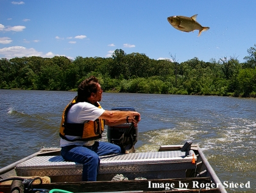

Asian Carp toxicant screening program

Currently, the identification of potential species-selective toxicants is based on the conduct of numerous acute toxicity tests which is labor intensive, slow and requires the exposure of numerous live fish from multiple species to each potential toxicant. Species-selective toxicants are preferable to non-selective toxicants because they can be used to target nuisance species like Asian carp while not harming other species. There are chemical databases (e.g., U.S. Environmental Protection Agency ECOTOX database) available that can be used to identify toxicants that are potential fish management chemicals. However, existing databases do not have the capacity to identify chemicals present in the database that have potential as selective toxicants. This project focuses on improving the processes used to identify potential candidate toxicants with comparable or possibly greater selectivity than current registered fish toxicants.
This work began by assembling fish toxicant data into a common database and examining the database for trends in toxicant data. The trends found in the toxicant database were linked to physiochemical properties of the individual toxicants. Combining the toxicant trends with the physiochemical properties may allow for the prediction of toxicity and the identification of chemicals with selectivity for the Asian carp. Identifying a selective toxicant may provide control of Asian carps while minimizing effects on other non-target aquatic species. When Asian carp specific toxicants are identified from the initial screen within the database these toxicants are then further screened in toxicity assays using fish cell lines developed in an earlier phase of this project. The use of fish cell lines as an initial screening tool provides a rapid and inexpensive method of assessment. It also minimizes the number of fish required for laboratory experiments during the development of new toxicants. The toxicants which have the best selectivity for Asian carp, as determined by fish cell line response, will complete additional screenings and evaluation to determine if they are viable candidates for registration as a new fish toxicant.
The benefits of using fish cell lines as a screening paradigm for selecting new candidate toxicants is three-fold. First, time is saved due to the fact that no fish broods are required to reach an age/weight needed to test chemical in a laboratory tank test system. Screening dozens or even a few hundred potential toxicants would take extensive time to cultivate the number of fish required from multiple species. Furthermore, the tests themselves generally require up to a week to complete and are therefore labor intensive. Although screening of toxicants with live fish will still be necessary, the initial and secondary screens with the toxicant database and the fish cell lines will minimize the number of live fish tests required. Second, fish cell lines are much cheaper to maintain than live fish. No large quantities of water are required with the incorporated cost of preparing, holding, and discharging the used water contaminated with the toxicant tested. The cost of maintaining the fish cell lines is also well below the cost of cultivating tanks of numerous fish species. Also, toxicants that are tested can be expensive and using fish cell lines will minimize the costs associated with the testing of expensive chemicals. Furthermore, fish cell lines are immediately available to test any range of chemicals on multiple fish species. Finally, minimizing the total number of animals used in any test program is ethically preferred and even mandated in many European countries.
The links between the physiochemical properties and toxicant trends have been developed and are ready to apply to chemical databases to identify potential fish species-specific toxicants.
Bighead and silver carp gill, skin, and fry cell lines
Database of physiochemical properties and toxic effect of specific toxicants on invasive and indigenous fish species to be made available in Spring 2014.
Joel Putnam, jgputnam@usgs.gov
Terrance D. Hubert, thubert@usgs.gov
Mark Gaikowski, mgaikowski@usgs.gov
USGS-Upper Midwest Environmental Sciences Center
608-783-6451